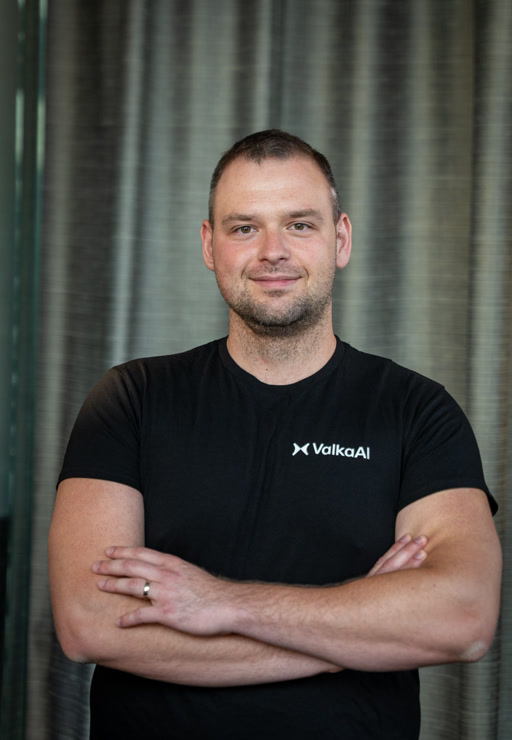
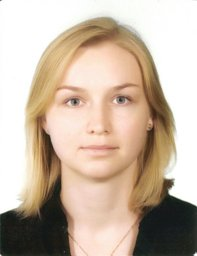

Research at Valka AI
“We do not feed on easy problems!”


Diffusion-Transformer-based synthesis of photorealistic human video with pixel-precise spatial conditioning.
Generative modeling of full-body motion, with emphasis on hand–object interaction.
Fine-grained, disentangled control of facial expressions in synthesized portrait video.
Long-horizon simulation of complex, multi-agent dynamics via world-model concepts.
Expressive speech synthesis with explicit control over emotion and prosody.
ValkaAI’s research team strives for research efficiency and talent density.
As we continuously explore new research avenues, our team is growing. We are always looking for exceptional researchers for full-time and internship roles, and actively seek research collaborations with top U.S. universities.
How to apply
Send a short note about yourself, the role you're interested in, and a link to your CV, Google Scholar, or GitHub.
ondrej.texler@valka.aiOpen roles
Intern · Remote within US & Canada
Intern · Remote within US & Canada
Intern · Remote within US & Canada
Intern · Remote within US & Canada
Intern · Remote within US & Canada
Full-time · Remote within Europe & US East Coast
Full-time · Remote within Europe & US East Coast